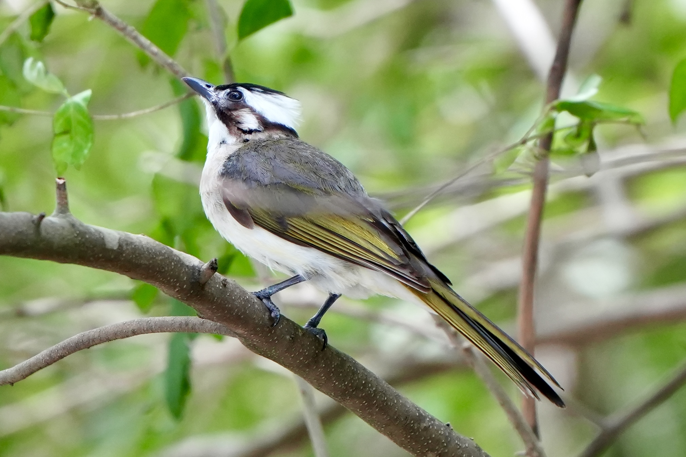
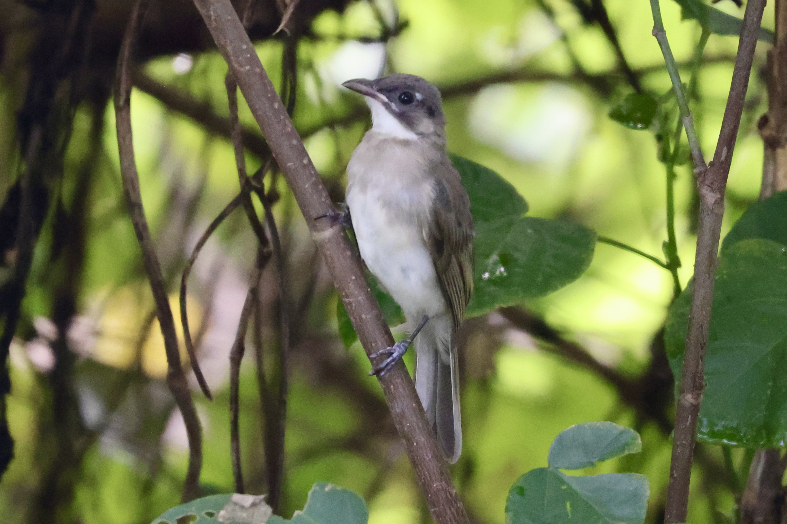

Light-Vented Bulbul
Pycnonotus sinensis
Other names: Chinese Bulbul
Order: Passeriformes
Family: Pycnonotidae

Technically the most common bird in HK (according to Avifauna HK). From personal experience though, less seen than Red-Whiskered Bulbul. Has a greenish back, white nape and ear patches.

Juvenile is duller in colour, with white head patches less well-formed, and a yellow gape.